kQSO — návod
Deník pro radioamatéry: aktivace SOTA/POTA/WWFF/GMA/TOTA/BOTA, VKV závody, satelity i běžný provoz. Pro web, Android a iOS. Rychlý tahák k zápisu spojení je v aplikaci pod ? (Jak zadávat spojení); tady je všechno podrobně a s obrázky.
Začínáš? Projdi si První kroky: VKV závod a SOTA aktivace krok za krokem.
1. Začínáme
kQSO je deník na jeden řádek: celé spojení napíšeš jako text (OK1ABC 59 JN79US) a aplikace pozná každou část podle tvaru. Nepotřebuje účet ani síť, všechno zůstává v zařízení.
- Android: Google Play, nebo APK z GitHubu.
- iPhone a iPad: aplikace pro iOS míří do App Store; do té doby webová verze přidaná na plochu.
- Web: kqso.ok1cdj.com v prohlížeči na počítači, tabletu i telefonu. Po prvním načtení funguje i bez sítě. Na iPhonu a iPadu ji přidej na plochu (Sdílet → Přidat na plochu), jinak může Safari data po čase smazat.
Úvodní obrazovka je seznam logů. Nahoře je + Nový log, ? (jak zadávat spojení) a ⚙ (Nastavení). U každého logu je export, u VKV závodu EDI a smazat.
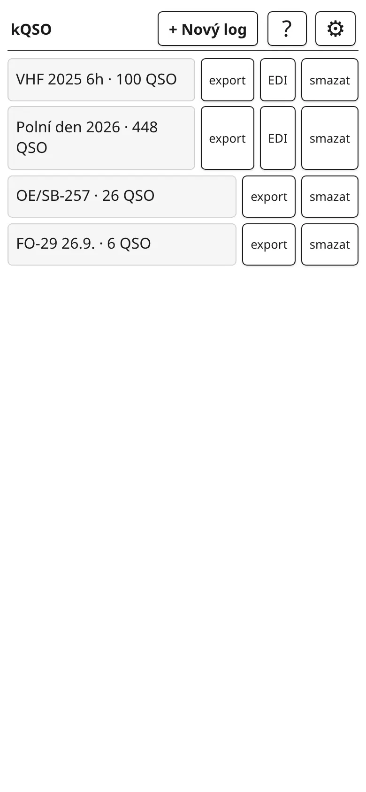
2. Logy a profily
+ Nový log založí log. Vyplň název, svou volačku a lokátor (tlačítko se zaměřovačem ho vyplní z polohy), počáteční pásmo a mód. Volačka a lokátor se pamatují pro příští log. Hlavní volba je profil, který určuje, co se předává a jak se log exportuje:
- Aktivace (SOTA, GMA, POTA, WWFF, TOTA, BOTA): reporty a reference. Do Moje reference napiš jednu nebo víc referencí oddělených mezerou, např.
OK/ZC-001 CZ-0123; parků POTA a bunkrů BOTA může být víc. Tlačítko polohy nabídne nejbližší reference do 25 km (jen programy vybrané v Nastavení → Reference offline), klepnutím se přidají. - Obecný: běžný provoz, navíc jméno protistanice.
- VKV závod: pořadová čísla, lokátory, body za km, export EDI. Volíš závod (IARU R1, VKV PA, FM pohár) a účast (celý závod nebo 6 hodin). Lokátor je povinný, 6 znaků.
- Satelit: co přelet, to log. Družice nastaví uplink a downlink.
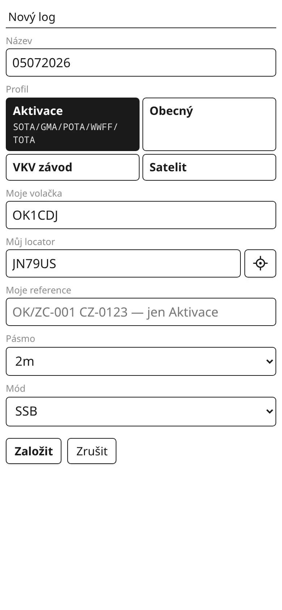

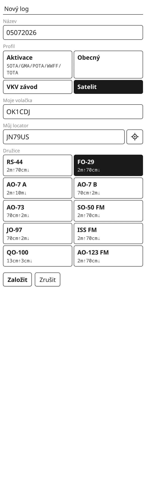
Klepnutím na log v seznamu se vrátíš k logování, a to i do rozepsaného spojení: kQSO zapisuje každé QSO hned, takže po pádu nebo restartu nic neztratíš.
3. Zápis spojení
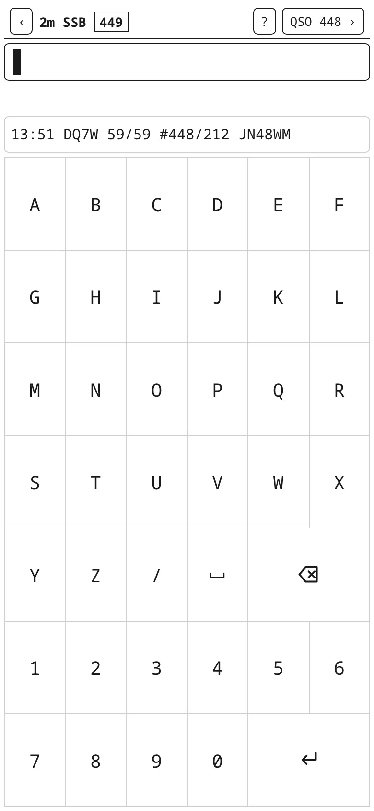
Logovací obrazovka má odshora:
- hlavičku: zpět na logy, pásmo a mód (jak je přepnout), ve VKV závodě v rámečku tvoje další pořadové číslo a azimut k protistanici, ? nápověda a QSO n › seznam spojení;
- řádek vstupu, kam píšeš;
- štítky s tím, co už aplikace z řádku poznala (CALL, RST, NR, LOC, QRB…), přerušovaně to, co ještě chybí;
- lištu s návrhy značek a lokátorů, nebo poslední zapsané QSO;
- klávesnici kQSO: abecední 6×7, velká tlačítka i do rukavic.
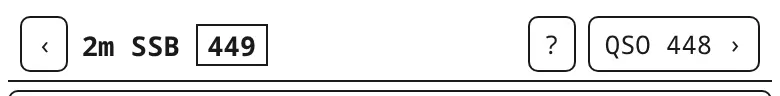
Celé spojení na jeden řádek
Napiš, co slyšíš, a stiskni Enter. Enter s textem přidá části ke spojení a řádek vyprázdní, prázdný Enter spojení zapíše. Povinná je jen volačka (ve VKV závodě i přijaté číslo a lokátor). S hardwarovou klávesnicí zapíše spojení i Ctrl+Enter, a to rovnou s textem, který je zrovna na řádku.

OK2KZR 59123 JN99AF: značka, report 59 + číslo 123, lokátor; hned je vidět QRB 179 km.Report nemusíš psát. Holé číslo za značkou je ve VKV závodě přijaté pořadové číslo a report zůstane výchozí 59 (v CW 599). Stačí tedy OK2KZR 123. Jiný report připíšeš před číslo: 57123 nebo 57 123.

OK2KZR 123: RST 59 doplněno samo, 123 je přijaté číslo.Reporty
Mimo VKV závod je holé číslo za značkou přijatý report: OK1ABC 57. Odeslaný report je výchozí 59 (v CW 599) a obvykle ho psát nemusíš. Když dáváš jiný, napiš ho s T na začátku: OK1ABC 57 T55 = přijato 57, odesláno 55. Když přijatý report nenapíšeš vůbec, uloží se také 59 / 599. Štítky ukazují RST (přijatý) a TX-RST (odeslaný).
Ve VKV závodě je holé číslo za značkou pořadové číslo, report se k němu připisuje zepředu (57123), viz výše.
Po částech, jak to slyšíš
Spojení nemusí být celé na jednom řádku. Každou část můžeš poslat zvlášť Enterem, třeba jak ji protistanice zrovna odvysílala: značku, pak číslo, pak lokátor. Štítky ukazují, co už máš a co chybí. Ve VKV závodě se spojení zapíše prázdným Enterem až ve chvíli, kdy má značku, číslo i lokátor; do té doby zůstane otevřené.

OK2KZR ⏎: značka je, NR a LOC chybí.
123 ⏎: přibylo číslo.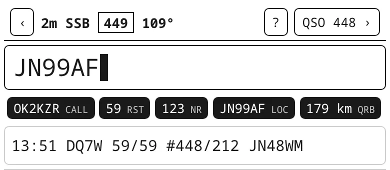
JN99AF: lokátor, QRB a azimut. Pak ⏎ a prázdný ⏎ zapíše.Překlep ve značce opravíš tak, že napíšeš novou: další značka nahradí tu předchozí, report a lokátor zůstanou. Ve VKV závodě můžeš začít i lokátorem, když ho uslyšíš první; lišta pak nabídne značky, které databáze na tom lokátoru zná.
Návrhy, lokátor z databáze a duplicity
Od dvou znaků lišta nabízí značky z databáze (přibalený seznam pro typ logu plus stanice, se kterými už jsi pracoval). Klepnutí značku doplní. Když databáze zná lokátor stanice, nabídne ho jako + lokátor: klepnutí (nebo Alt+X) ho vezme.


Ve VKV závodě ukáže štítek QRV další pásma, na kterých stanice bývá (z databáze). Pásma, kde už s ní spojení máš, jsou přeškrtnutá, takže hned vidíš, kam ji ještě přetáhnout.

Duplicita zčerná celý řádek. Duplicita je stejná značka na stejném pásmu a módu; ve VKV závodě na stejném pásmu (na módu nezáleží), v satelitním logu na stejné družici. Zapsat ji jde, ve VKV závodě má 0 bodů.

Přepnutí pásma a módu
Aktuální pásmo a mód jsou v hlavičce (2m SSB). Počáteční zvolíš při zakládání logu; otevřený log pokračuje na pásmu a módu posledního spojení. Žádné menu na to není: pásmo i mód se přepínají psaním, stejně jako se zapisuje spojení.
- Napiš na řádek pásmo nebo mód a stiskni Enter:
70cm⏎,cw⏎, nebo obojí naráz70cm cw⏎. Hlavička se hned změní. - Pásmo a mód drží pro všechna další spojení, dokud je znovu nezměníš. Zápis spojení ani
Wje nemění. - Jde to i na stejném řádku se spojením nebo uprostřed rozepsaného spojení:
70cm OK1EM. Spojení dostane pásmo a mód platné ve chvíli zápisu (prázdný Enter); duplicita a štítek QRV se kontrolují už na novém pásmu. - Pásma: 160m 80m 60m 40m 30m 20m 17m 15m 12m 10m 6m 4m 2m 70cm 23cm 13cm 9cm 6cm 3cm 1.25cm 6mm 4mm. Klávesnice kQSO nemá tečku, proto mikrovlny jdou napsat i v GHz:
1G= 23 cm,2G= 13 cm,3G= 9 cm,5G= 6 cm,10G= 3 cm,24G= 1,25 cm,47G= 6 mm,76G= 4 mm. - Módy:
cw,ssb,fm. Na velikosti písmen nezáleží. S hardwarovou klávesnicí přepíná mód i Alt+M (CW → SSB → FM). - Spojení zapsané na špatném pásmu nebo módu opravíš v Seznamu QSO (klepnutí na spojení), poslední spojení příkazem
E.

70cm OK1EM: hlavička ještě ukazuje 2 m, ale QRV už počítá se 70 cm (nabízí 2 m jako další pásmo).
70cm ⏎: hlavička 70cm SSB, číslování běží dál.- VKV závod: pořadová čísla jsou společná pro všechna pásma, po přepnutí tedy pokračují. Duplicity a body se počítají po pásmech; poslední spojení a závodní panel ukazují jen aktuální pásmo. U stanice, kterou už máš z jiného pásma, nabídne kQSO lokátor z logu.
- Satelit: pásma určuje družice zvolená při založení logu, napsané pásmo se nebere. Na lineárních družicích jde přepnout
ssb/cw. - S rádiem (CI-V) se pásmo a mód berou z rádia, takže stačí přepnout na rádiu. Napsané pásmo nebo mód naopak přeladí rádio, viz Rádio.
Čas spojení
Čas se bere v UTC při prvním stisku klávesy. Ručně (třeba z papíru) ho zadáš jako první část řádku: 1832 OK1ABC.
Příkazy
Jedno písmeno samotné na řádku a Enter. Náhled pod řádkem ukáže, co se stane, ještě před Enterem.
W | zahodí rozepsané spojení |
D | smaže poslední zapsané spojení (nejdřív se zeptá) |
E | upraví poslední zapsané spojení |
H | nápověda |
Esc smaže rozepsaný řádek (třeba značku, kterou si jen ověřuješ v logu).
Seznam QSO a úprava
QSO n › otevře seznam spojení, nejnovější nahoře. Klepnutím na spojení ho upravíš nebo smažeš. Ve VKV závodě má seznam přepínač pásem, body u každého spojení a řádek se skóre pásma; nahoře jsou tlačítka Mapa a Statistika.

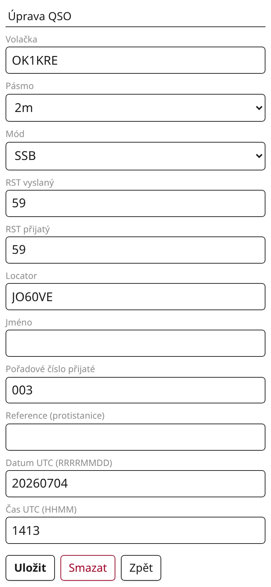
Klávesnice: kQSO, systémová, žádná
V Nastavení → Klávesnice pro logování vybereš:
- kQSO: vlastní abecední klávesnice (výchozí);
- Systémová: klávesnice telefonu (otevře se klepnutím na řádek); řádek je nahoře a pod ním poslední spojení;
- Žádná: jen hardwarová klávesnice (počítač, tablet s klávesnicí); místo dostane seznam posledních spojení a ve VKV závodě na šířku závodní panel.
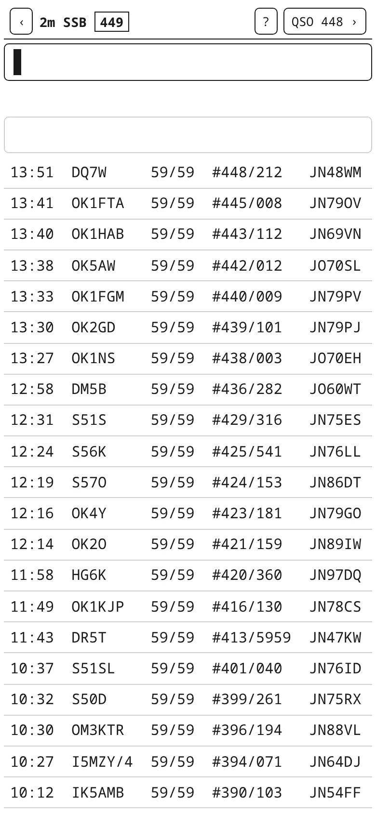
4. VKV závod
Log s profilem VKV závod počítá body (1 bod za km mezi středy lokátorů podle IARU R1; VKV PA a FM pohár po prstencích velkých čtverců), hlídá duplicity po pásmech a čísluje tvoje spojení. Další odesílané číslo je v hlavičce v rámečku; číslování je společné pro všechna pásma.
V kategorii 6 hodin (na 2 m, 70 cm, 6 m a 4 m) hlídá kQSO šestihodinové okno pro každé pásmo zvlášť:
- okno začíná prvním spojením na pásmu a hlavička ukazuje zbývající čas (6H 0:29);
- pauza mezi spojeními 2 hodiny a víc je přestávka: čas se zastaví a ukazuje se v závorce (6H (2:15));
- prvním spojením po přestávce začne 2. část se zbytkem šesti hodin a kQSO to oznámí;
- když šest hodin vyprší, kQSO to oznámí a hlavička ukáže 6H 0:00. Další spojení jde zapsat, do kategorie 6H se ale nepočítá (deník se posílá celý).
Ve statistice je vidět, která spojení patří do okna.
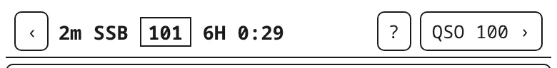
Závodní panel
Na tabletu nebo počítači na šířku, se systémovou klávesnicí nebo bez klávesnice (Nastavení → Klávesnice pro logování → Žádná), ukáže kQSO vpravo závodní panel: velké číslo, které dáváš protistanici, hodiny UTC, počet QSO na pásmu, rate za posledních 60 a 10 minut, body, průměr a ODX.
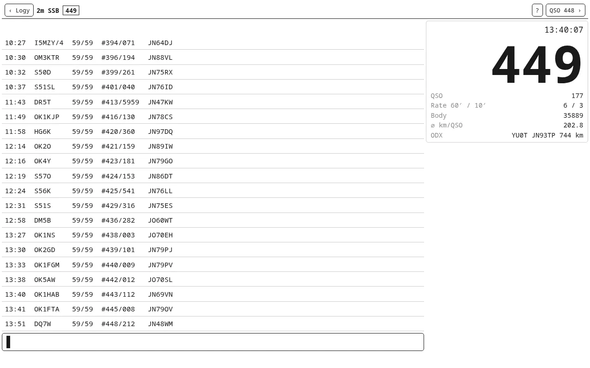
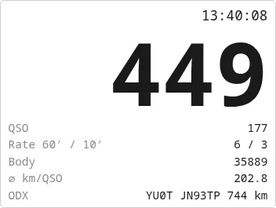
Statistika
Seznam QSO → Statistika ukáže pro každé pásmo zvlášť (pásma se nemíchají):
- souhrn: QSO, body a průměr bodů na spojení, u více pásem i Celkem;
- Po hodinách (UTC): spojení a body v každé hodině a průběžné součty, takže je vidět, kdy to šlo a kdy stálo;
- Velké čtverce: kolik stanic z každého čtverce, vzdálenost a směr; klepnutím na čtverec se ukáží jeho stanice;
- Top 10: nejdelší (nejcennější) spojení pásma.

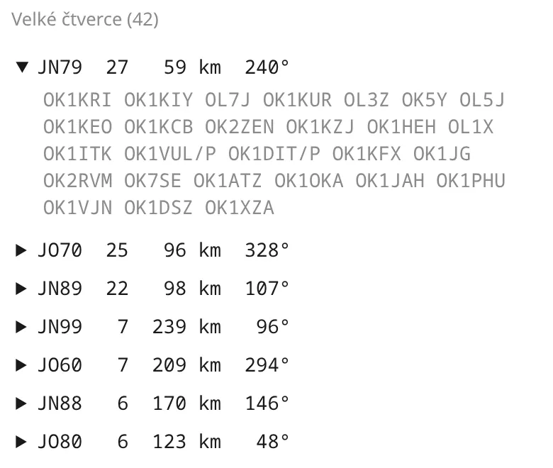
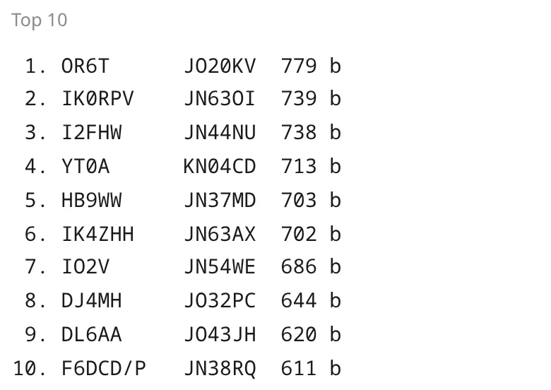
U kategorie 6 hodin statistika ukáže, kdy okno šest hodin běželo, a v tabulce po hodinách sloupec mimo 6 h pro spojení, která se do kategorie nepočítají.
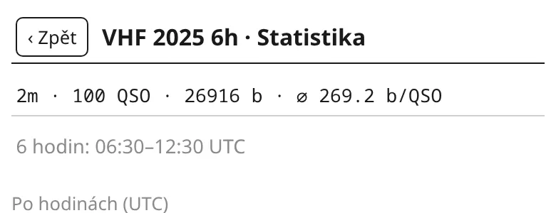
Mapa
Seznam QSO → Mapa: tečka za každý udělaný lokátor, síť lokátorů a tvůj QTH. Táhnutím posuneš, − + přiblížíš, tlačítko rohů ukáže vše. V Nastavení jde vypnout značky u teček.
Klepnutí do mapy ukáže vlevo nahoře lokátor toho místa, vzdálenost (QRB) a azimut od tebe, stejně jako v logu. Hodí se, když chceš vědět, kam otočit anténu na oblast deště nebo na stanici, kterou ještě nemáš. Křížek × údaj zavře.
Srážkový radar (Nastavení → Srážkový radar na mapě VKV závodu, výchozí vypnuto) přidá pod mapu aktuální snímek srážek z RainVieweru. Je to nástroj pro rain scatter na 3 cm: ukáže, kde jsou srážkové buňky, a klepnutím do nich zjistíš azimut, kam otočit anténu. Snímek se obnovuje, dokud je mapa otevřená; čas snímku v UTC je vlevo dole. Radar je jen u VKV závodu a jen tehdy jde dotaz do sítě (žádná data z logu). V E-ink zobrazení se kreslí v odstínech šedi.
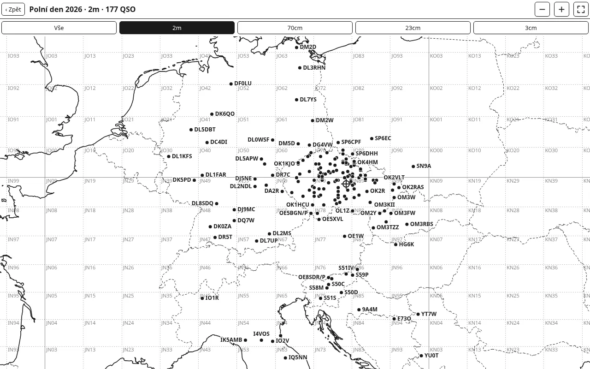
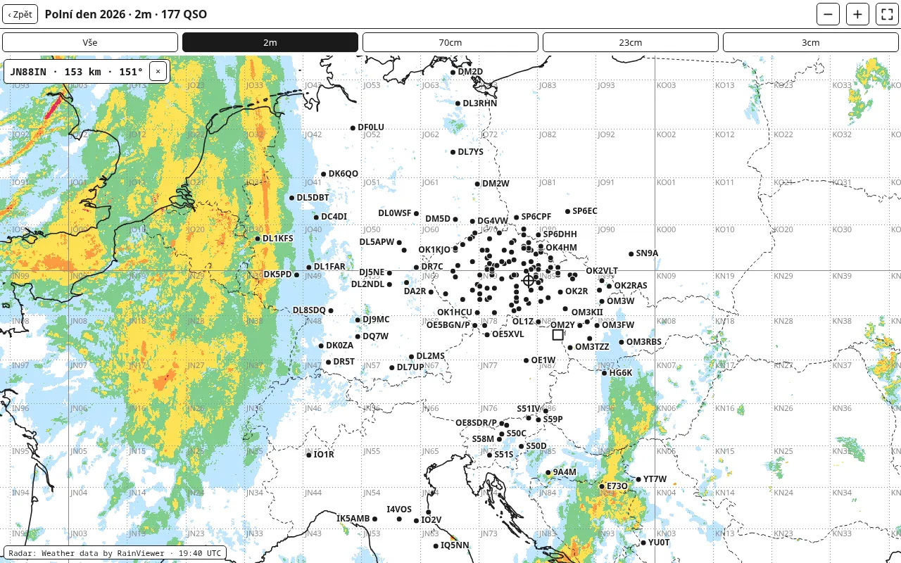
Export EDI
V seznamu logů tlačítko EDI připraví soubory pro vyhodnocovatele: jeden soubor na pásmo (např. 02OK1KPA.edi). Nahoře zkontroluj název závodu, závod, účast a kategorii (SO, MO, CHECK); u MO doplň další operátory. Stanice (jméno, e-mail) je společná pro všechna pásma.
Každé pásmo má vlastní výkon, anténu, výšku antény a vybavení; kQSO si je pamatuje pro příští závod. Na 145 a 435 MHz rozhoduje výkon o sekci: do 100 W je to LP. VKV PA nabídne odeslání robotovi, FM pohár souhrn pro webový formulář.


ADIF z tlačítka export obsahuje všechna pásma najednou, třeba pro Wavelog.
5. Aktivace a satelity
Aktivace
V aktivaci se předávají reporty: DD2TC 55 je přijatý report 55, odeslaný zůstane 59. Jiný odeslaný report napiš s T: DD2TC 55 T57 (viz Reporty).
Spojení vrchol–vrchol (S2S), park–park (P2P) a s jinou referencí: referenci protistanice připiš na řádek za značku, klidně až po reportu, jak ji uslyšíš: OK1ABC/P 55 OK/ZC/001. Klávesnice nemá pomlčku, proto se píše s lomítkem a poslední lomítko se změní na pomlčku (štítek REF ukáže OK/ZC-001). Druh reference pozná kQSO podle tvaru:
| SOTA | OK/ZC/001, OE/SB/257 |
| GMA | OL/LI/001, DA/BW/001 |
| POTA | CZ/0123, US/10000 |
| WWFF | OKFF/0001 |
| TOTA (rozhledny) | OKR/1001 |
| BOTA (bunkry) | B/OK/0123 |
U jednoho spojení je jedna reference protistanice; napsaná znovu nahradí předchozí. V ADIF jde SOTA do SOTA_REF, POTA do POTA_REF, WWFF, GMA a TOTA do SIG / SIG_INFO, BOTA jako SIG WWBOTA (tak ho chce wwbota.net, i MY_SIG u tvých bunkrů, víc oddělených čárkou), takže S2S po nahrání na sotadata.org.uk sedí.
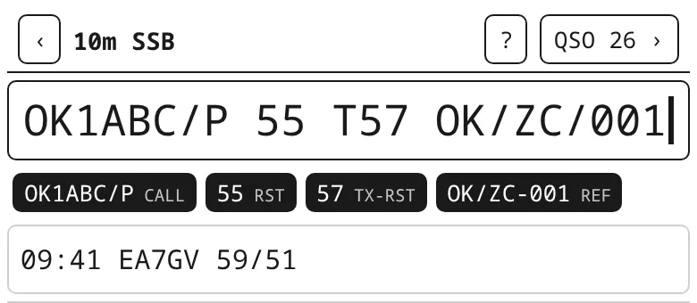
OK1ABC/P 55 T57 OK/ZC/001: přijato 55, odesláno 57, protistanice na vrcholu OK/ZC-001.
Má-li aktivace víc vlastních referencí (vrchol + park), export nabídne celý ADIF a k tomu soubor pro každou referenci zvlášť, jak je chce nahrát každý program.
Obecný log, třeba na portable
Profil Obecný se hodí na portable bez diplomového programu, na výlet nebo na Field Day mimo VKV závod. Předává se report, a když protistanice řekne, i lokátor a jméno: OK1ABC 57 JN79US PETR. Lokátor se bere za značkou (4 nebo 6 znaků), slovo, které není značka ani nic jiného, je jméno. Volačku si můžeš zadat i s lomítkem (OK1CDJ/P), stejně jako protistanici (OK1ABC/P, HB0/OK1MCS/P). Obecný log jde odeslat do Wavelogu.
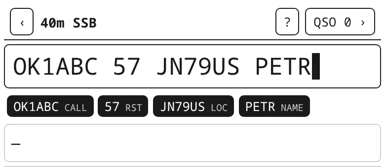
Satelity
Satelitní log patří k jednomu přeletu. Družici vybereš při zakládání logu; nastaví pásma uplink a downlink i SAT_NAME. Předává se report a lokátor: 9A2U 59 JN75RO. Na lineárních družicích jde přepnout ssb a cw.
Seznam QSO → Mapa ukáže lokátory stanic z přeletu, stejně jako mapa VKV závodu (bez srážkového radaru). Spojení nesou kmitočty uplinku a downlinku (ADIF FREQ / FREQ_RX), takže je Wavelog po odeslání zná.

6. Export a Wavelog
kQSO nemá import logů a nic nesynchronizuje: log se odešle nebo exportuje a je hotovo.
- export v seznamu logů uloží ADIF (v aplikaci přes sdílení nebo do souborů, na webu stažením).
- EDI u VKV závodu, viz VKV závod.
- Wavelog: v Nastavení zadej adresu svého Wavelogu (jen https) a token API v2 se scopes
qso:writeastation:read(Wavelog 3.1 a novější), klepni Připojit a vyber station profil. U logů Obecný, Satelit a VKV závod se pak objeví tlačítko Wavelog; po klepnutí ukáže, kolik spojení bylo nových a kolik duplicit. Aktivace se do Wavelogu neposílají (jdou do SOTA, POTA… přes jejich vlastní nahrávání).
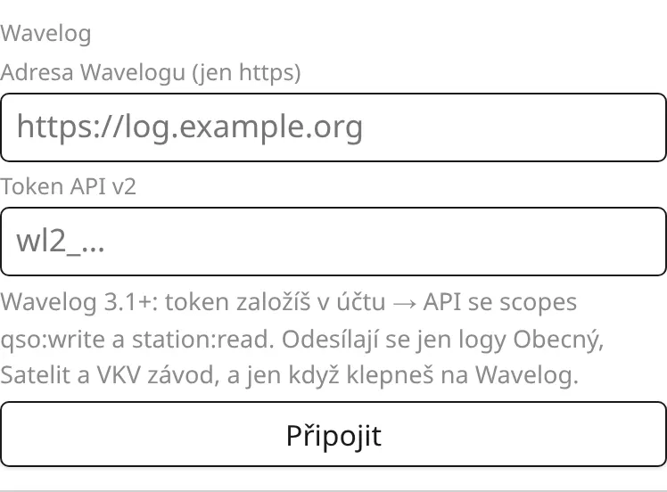
7. Databáze značek a reference offline
Databáze značek dává návrhy a lokátory. Skládá se z přibalené sady pro typ logu a z tvých vlastních pracovaných stanic, které přibývají s každým spojením. V Nastavení ji jde vypnout, exportovat, importovat (sloučí se) a vlastní část smazat.
| VKV závod | asi 3 000 značek z veřejných EDI deníků za poslední dva roky, s lokátorem a pásmy, na kterých stanice jezdí (štítek QRV). Lokátor se bere, až ho má dost deníků (144 MHz 5, 432 MHz 3, výš 2) nebo vlastní deník stanice, takže překlepy vypadnou. Obnovuje se zhruba dvakrát ročně s novou verzí aplikace. |
| Aktivace | asi 1 000 značek stanic, které aktivace často volají (chaseři). |
| Satelit | asi 5 300 značek satelitních operátorů (LEO) s lokátory. |
| Obecný | bez přibalené sady, jen tvoje stanice. |
Tvoje vlastní spojení se do databáze zapisují ve všech logech; když stanici uděláš na novém pásmu VKV, přibude jí to pásmo do QRV.
Reference offline: seznamy SOTA, POTA, WWFF, GMA, TOTA a BOTA (bunkry z WWBOTA, u nás OKBOTA) pro nabídku referencí v okolí. Které programy se v okolí nabízejí, vybereš tamtéž; napsat jde reference každého. Okolí se stáhne samo, když je síť; před výletem si stáhni oblast (pole JN nebo lokátor JN69).
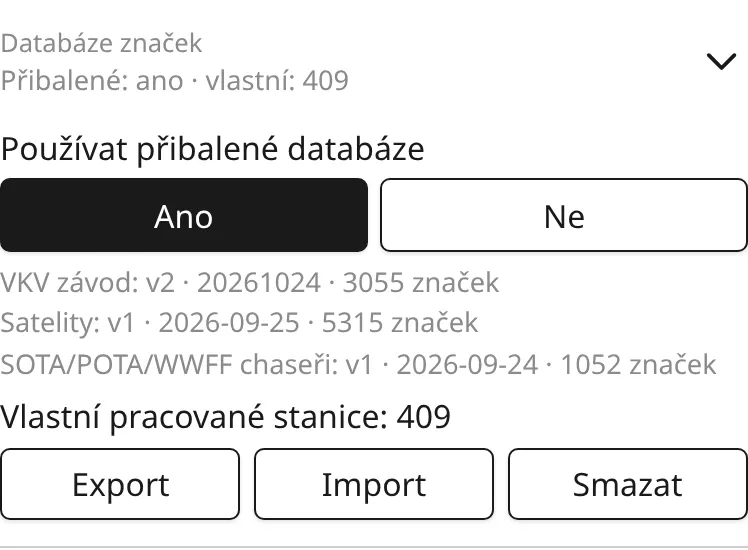
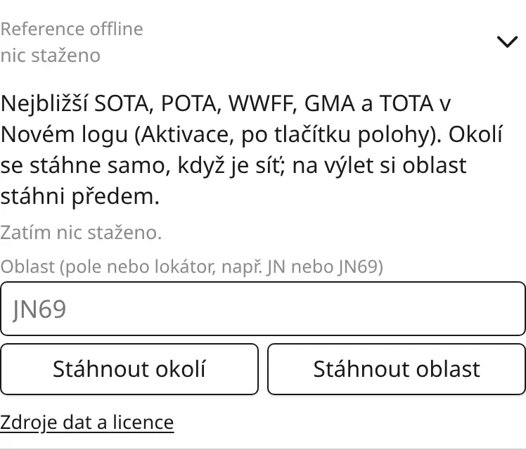
8. Rádio (CI-V) a CW klíčovač
Obojí je beta. Chyby prosím hlas na GitHub Issues.
Rádio – CI-V
kQSO umí číst a ladit rádia Icom. Známé modely: IC-705, IC-706 / MkII / MkIIG, IC-910 (volitelný modul 23 cm), IC-9700, IC-7300, IC-7610, IC-7100; jiné rádio s neznámou adresou se ovládá jako obecné CI-V (pásmo, mód, kmitočet).
- IC-705 přes jeho Bluetooth (aplikace pro Android a iOS): Nastavení → Rádio → IC-705 Bluetooth → Připojit. Poprvé na rádiu otevři MENU → SET → Bluetooth Set → Pairing Reception.
- Jakýkoli Icom přes klíčovač M5-ESP32-keyer na CI-V konektoru rádia (firmware 2.1.0 a novější; aplikace i Chrome / Edge): Nastavení → Rádio → Přes klíčovač. V rádiu zapni CI-V Transceive.
Pásmo, mód a přesný kmitočet se pak berou z rádia. Napsané pásmo nebo mód rádio přeladí, F28300 ho naladí na 28,300 MHz. Pásmo, které rádio neumí, přepne jen log. Model rádia se pozná podle CI-V adresy; při změněné adrese ho vyber ručně.
CW a hlas přes rádio: IC-705, 9700, 7300 a 7610 vysílají CW makra vlastním klíčovačem přes CI-V (IC-7100 také), klíčovač M5 tedy není potřeba; v SSB a FM lišta nabízí hlasové paměti rádia T1–T4 (nahraj si do rádia třeba výzvu; na klávesnici F5–F8, Esc zastaví). Starší rádia (IC-706, 910) klíčuje drátem klíčovač M5.
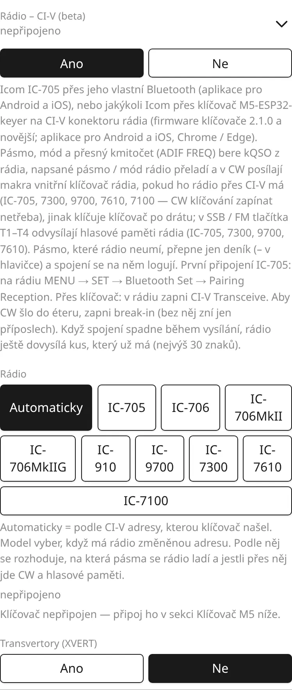
Transvertory (XVERT): pro každé pásmo kmitočet RF a mezifrekvence na rádiu. Klepnutím na pásmo jeho transvertor zapneš. Napsané pásmo pak rádio naladí na mezifrekvenci a do logu jde kmitočet RF (v hlavičce XV).
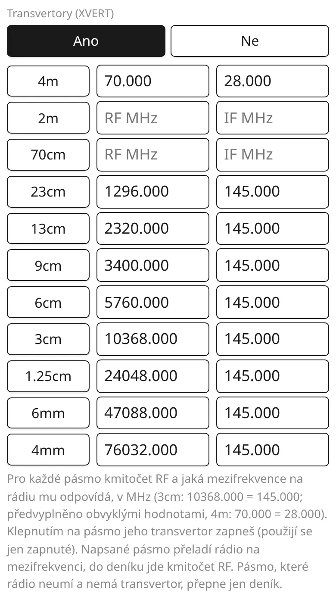
CW klíčovač M5
Klíčovač M5-ESP32-keyer je klíčovač na stavbu; díly, schémata a nahrání firmwaru najdeš na keyer.ok1cdj.com. Připojuje se přes Bluetooth (aplikace pro Android a iOS, Chrome / Edge): Nastavení → Klíčovač M5 → CW klíčování Ano → Připojit. V CW pak lišta nabízí makra CQ, EX, TU, MY, LOC/REF a ?, hlavička ukazuje RUN nebo S&P a rychlost. S rádiem, které klíčuje CW přes CI-V, klíčovač M5 nepotřebuješ (viz Rádio).
- Makra má každý profil zvlášť pro RUN (dávám CQ) a S&P (odpovídám). Proměnné:
{CALL}{MYCALL}{MYLOC}{MYREF}{RST}{NR}{LOC}{REF}{HI}(GM / GA / GE podle místního času). - ESM (jako v N1MM): Enter posílá makra podle stavu spojení. Zapíná se v Nastavení nebo příkazem
ESM. - Na řádku:
R/Srežim RUN / S&P,S20rychlost 20 WPM,Cznovu připojit,K PSE QRSodešle text, samotnéKzapne CW klávesnici (co píšeš, jde do éteru). Esc nebo STOP vysílání zastaví.
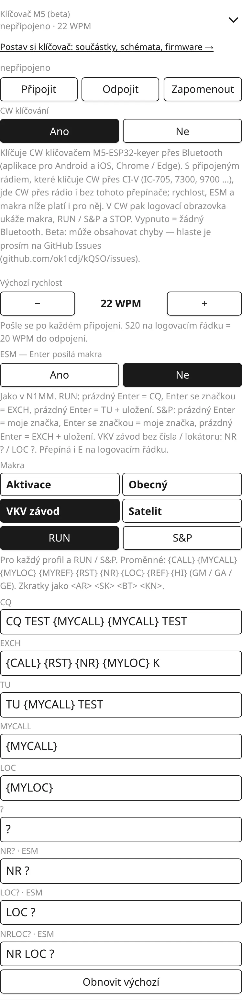
9. Hardwarová klávesnice
S klávesnicí (počítač, tablet) fungují tyto zkratky. Zkratka, která zrovna nemá co dělat, klávesu nechá být.
| Enter | přidat napsané, prázdný Enter zapíše spojení |
| Ctrl+Enter | zapsat spojení hned (když má vše potřebné) |
| Esc | smazat rozepsaný řádek; při vysílání STOP |
| Alt+W Alt+D Alt+H Alt+E | zahodit spojení / smazat poslední / nápověda / upravit poslední |
| Alt+X | vzít lokátor nabídnutý z databáze |
| Alt+M | mód CW → SSB → FM |
| Alt+L / Alt+Q | seznam QSO / zpět na logy |
| F5 F6 F7 F8 F11 F12 | makra CQ EX TU ? MY INFO; v SSB / FM F5–F8 hlasové paměti T1–T4 |
| PgUp / PgDn | rychlost CW ±2 WPM |
| Alt+R Alt+S Alt+C Alt+K | RUN / S&P / připojit klíčovač / CW klávesnice |
| Ctrl+M | ESM zapnout / vypnout |
10. Nastavení
⚙ v seznamu logů. Části po řadě:
- Zobrazení
- Standardní nebo E-ink (jen černá a bílá, bez stínů a animací, pro e-inkové displeje jako Mudita Kompakt). Ve standardním zobrazení téma Systém, Světlý nebo Tmavý.
- Klávesnice pro logování
- kQSO, Systémová, Žádná; viz Zápis spojení.
- Značky stanic na mapě, Srážkový radar
- Popisky teček na mapě; radar RainViewer na mapě VKV závodu (výchozí vypnuto, jen tehdy jde dotaz do sítě).
- Wavelog
- Adresa, token, station profil; viz Export a Wavelog.
- Databáze značek, Reference offline
- Viz Databáze značek.
- Rádio – CI-V, Klíčovač M5
- Viz Rádio a klíčovač.
- Úložiště
- Kde jsou data a jestli jsou trvalá. Ve webové verzi zapne trvalé úložiště přidání na plochu a první QSO.
- Kontrolovat aktualizace / Anonymní statistiky
- Android z GitHubu: jednou denně dotaz na novou verzi. Web: anonymní počty obrazovek a funkcí (nikdy obsah logu); obojí jde vypnout.
- O aplikaci
- Verze, licence, odkazy, Jak zadávat spojení, Návod a Co je nového.
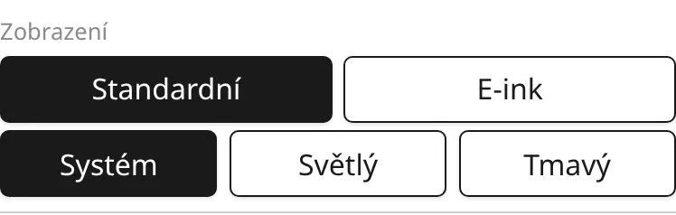
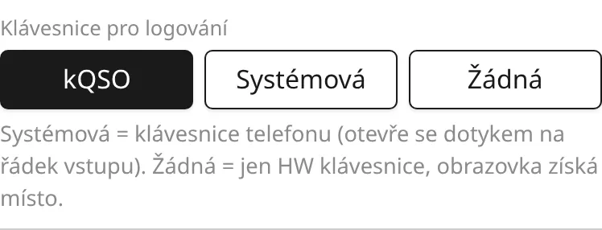
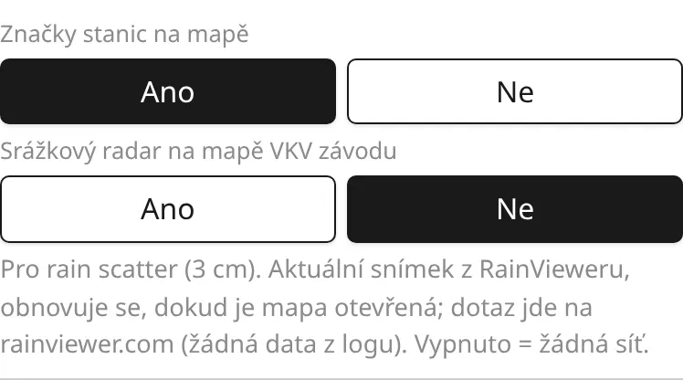
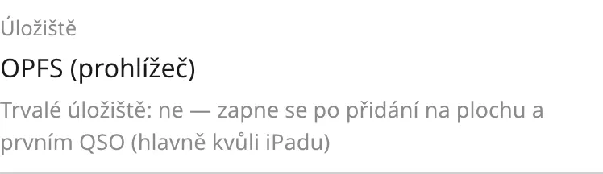
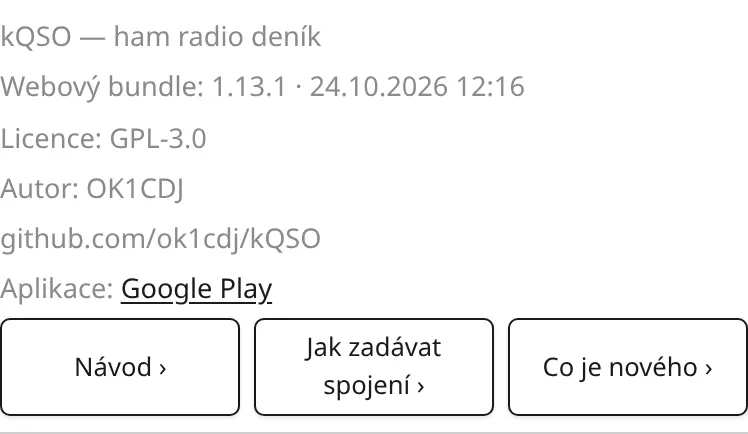
11. Otázky a potíže
- Kde jsou moje data?
- Jen v zařízení: Android v úložišti aplikace, iOS ve složce Documents (vidíš ji v aplikaci Soubory), web v soukromém úložišti prohlížeče. Žádný server je nevidí. Viz zásady ochrany soukromí.
- Na webu se mi ztratily logy.
- Prohlížeč smí data webu bez trvalého úložiště smazat. Přidej kQSO na plochu a stav ověř v Nastavení → Úložiště. Důležité logy exportuj.
- Klíčovač nebo IC-705 se nepřipojí.
- Na Androidu povol aplikaci Bluetooth (na Androidu 11 i polohu, kterou systém vyžaduje pro hledání zařízení). Na webu jen Chrome nebo Edge. Když spojení spadne, klepni na ✕ v hlavičce nebo napiš
C. - Spletl jsem si lokátor nebo volačku při zakládání logu.
- Hlavičku logu (volačku, lokátor, reference) po založení změnit nejde. Když v logu ještě nic není, smaž ho a založ znovu. Jinak založ nový log se správnými údaji a další spojení zapisuj do něj; ve VKV závodě se na to dívej hned po prvním spojení, protože body se počítají od tvého lokátoru.
- Přepisuji spojení z papíru z jiného dne.
- Čas napsaný na začátku řádku (
1832 OK1ABC) platí pro dnešní datum UTC. Spojení z jiného dne zapiš a datum mu oprav v Seznamu QSO (klepnutí na spojení, pole Datum UTC). - Jak přenesu logy na jiný telefon nebo počítač?
- kQSO nemá import ani synchronizaci: logy se exportují (ADIF, EDI) nebo odešlou do Wavelogu a tím jsou hotové. Na novém zařízení se začíná s prázdným seznamem. Databázi značek přeneseš přes Nastavení → Databáze značek → export / import.
- Jak přepnu jazyk?
- kQSO je česky nebo anglicky podle jazyka systému (na webu prohlížeče). Samostatný přepínač v aplikaci není.
- Aplikace nevzala značku nebo lokátor.
- Podívej se na štítky pod řádkem: ukazují, co kQSO z textu poznalo. Lokátor se bere až po značce (ve VKV závodě celý lokátor kdykoli). Když něco nesedí, napiš prosím na GitHub Issues.